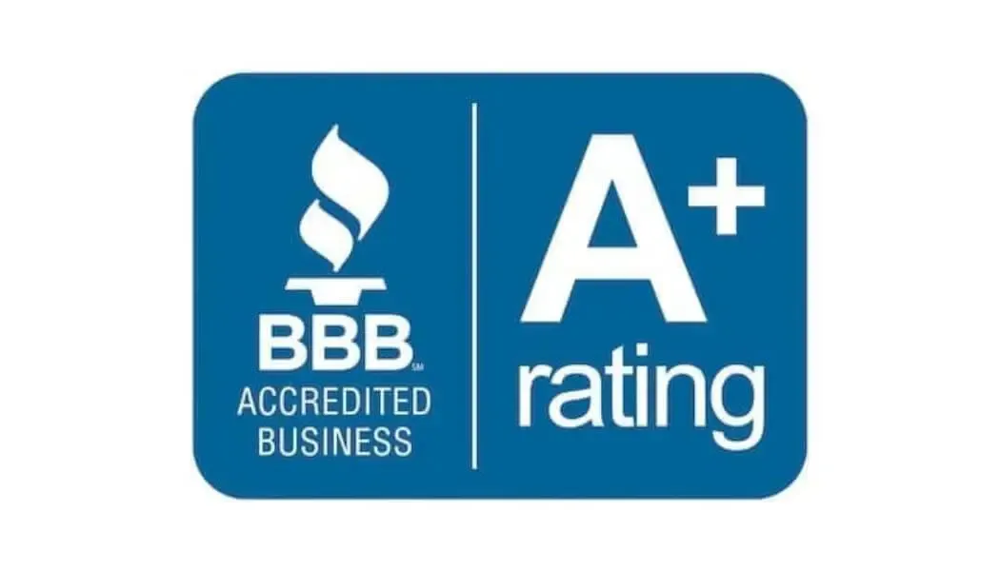
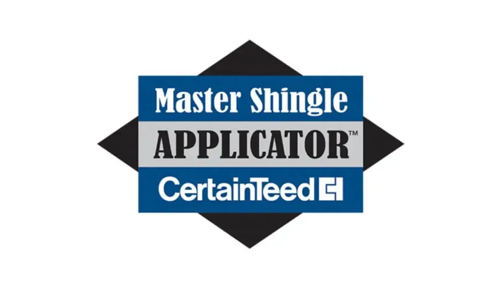

Built on Skill, Experience & Integrity
Commercial & Residential Roofing in Orem
When it comes to protecting your home or business, you need a roofing contractor you can trust. Serving Orem, Utah, and the surrounding communities, Pioneer Roofing Co. delivers dependable roofing solutions for both residential and commercial properties. From full roof replacements to lasting repairs, our team has the skill and experience to get the job done right the first time.
24/7 Emergency Roofing Service.
801-943-7663
Request a Free Estimate
- Required Fields
Roof Replacement in Orem
When your roof has reached the end of its lifespan, our skilled team can provide a seamless, worry-free roof replacement. We use only premium materials and proven installation techniques to ensure your new roof is durable, weather-resistant, and built to last.
New Construction Roofing
Building a new home or commercial property? We work closely with builders, architects, and property owners to install high-performance roofing systems tailored to your project’s needs—whether pitched or flat.
Wind & Hail Damage
Major weather events like hail and strong winds can cause significant damage to your roof. We offer timely roof inspections to get the insurance claims process started.
Orem Utah Roof Repairs
From minor leaks to storm damage, we provide expert roof repairs that restore your roof’s integrity and protect your property from further issues. Our goal is to fix problems quickly, effectively, and affordably.
Why Choose Us for Your New roof?
We’re Orem’s roofer of choice because we put our customers first, act with integrity, and are commited to quality. Learn more about what makes Pioneer Roofing the obvious choice.
Proven Experience
45 years of hands-on roofing expertise in both residential and commercial projects.
quick response times
We treat every job with thee same urgency our customers require. We often can have a quote delivered in the same business day.
Fully Licensed
We maintain all required trade licenses, insurances, and bonds giving you peace of mind.
Affordable Package
We work as efficiently as possible to keep costs down and provide affordable estimates to our customers.
Locally Owned and Operated
We are based in Cottonwood Heights, Utah and service Orem, Provo, and all of Utah County.
Best in Quality
We only use the highest-quality materials for long-lasting performance to ensure our work will stand the test of time.
John and his team are incredible! We have done several roofs with them and they are always punctual, timely in their service, professional in the installation, and respectful of the cleanup. I would HIGHLY RECOMMEND!
Kayleen Carli I got quotes on my roof from several companies before I went with Pioneer Roofing. Not only was Pioneer Roofing the most affordable quote, they also did an amazing job, got it done incredibly fast, and did it when they actually said they would! They have all of the right equipment to be efficient and do a high quality job. Rick Johnson Pioneer roofing is amazing!! They are so efficient and got our roof finished in one day. The workers were kind and professional and left everything in perfect condition. Communication with the company was great and I can’t recommend them enough! Emma Otto

Awards & Achievements
We're recognized by industry leaders for our quality and customer care. Contact us today and see why Pioneer Roofing is recognized as one of Utah's leading roof repair and replacement experts.
claim Your Free Estimate.
Reach out today for free quote on your upcoming roofing project.
Book Appointment Book Appointment